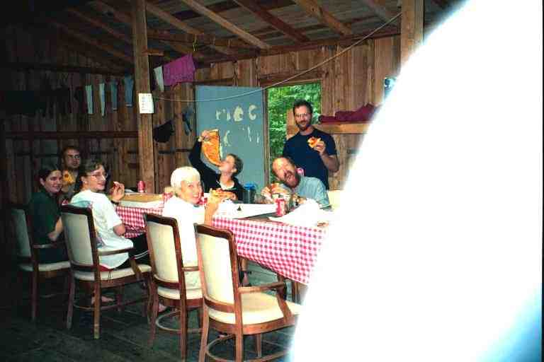
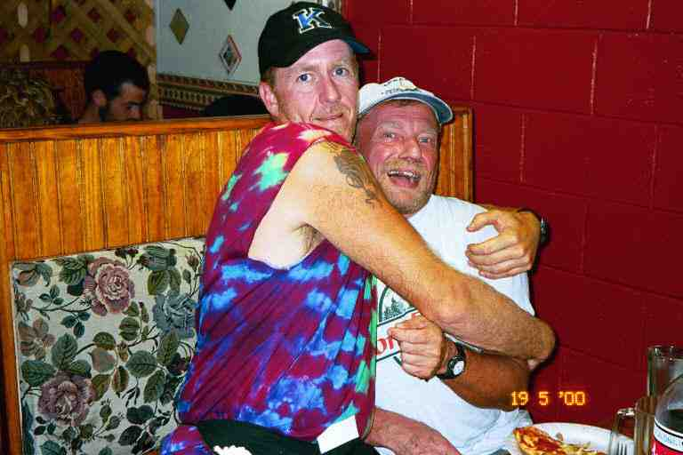

June 24 was another hot day and we had 13.5 miles of mostly open fields to walk before getting back into wooded hills. We walked through Boiling Springs, stopping at the regional ATC building to get water and then headed along a road before going into the fields.
We walked pretty fast that morning, crossing 5 roads and going through pastures and fields of wheat. GRACE'S SON passed us and said that we were doing really great. He had passed us a couple of times during that week and each time he made a similar comment. For some reason it bothered me, likely because he was not that much younger than us. GRACE'S SON was a very nice person so I did not comment. (We first met him at Pine Grove Furnace Park where he witnessed my ice cream success.) We covered 8 miles in just 3 hours, crossing the trail walkway over US11 around 10:30 a.m.
Temptation then got to us and we headed half a mile down the highway to a couple of motels with air conditioned rooms. The highway was busy with truck traffic as there were a number enormous lots belonging to transport companies all down the road. We took off our packs next to the road to check rates at a motel, and a large transport stopped to offer us a ride. We waved him on. We finally settled for a room at the Super 8 where we checked their trail register and found that LA TORTUGA got off the trail here on June 3 because of problems at home with her elderly mother. She had begun her hike in February and we had been following her journal at trailplace.com before we left home. (We have now found out that she is back on the trail this year to complete her hike and is again posting her journal on line)
We rested in the air conditioned room and had lunch and supper at the Middlesex Diner across the street. WHISTLER and WHISTLER'S MOM showed up at the motel and MA spent part of the afternoon sitting on the hot sidewalk in front of the motel's small laundry room talking to WHISTLER'S MOM. BRISTLECONE also took a room, and a hiker showed up to use his shower.
The next day, after the advertised motel breakfast (donut holes and coffee), we walked back up the road and climbed the embankment to the trail where we found TOEJAM and HAIRY STRAWBERRY in their tent in the bushes next to the trail. They had walked down the road to the restaurant for supper and then come back here to sleep. We were soon walking alongside a slow moving murky creek and then crossed a bridge and arrived at an old farm known as Scott Farm that served as a headquarters for trail maintenance. We obtained water from a spigot at the barn and I walked up the road alone to see if I could locate the convenience store that was in a local trailer park. I stopped a car and the lady told me the store had burned down a few years ago. I was just looking for a few snacks and maybe pop, so it was not a problem.
Late in the morning, the trail finally began to climb and we met a ridgerunner coming down off the mountain. At the top of the mountain we came to Darlington Shelter around lunch time where we met a southbound section hiker. BALTIMORE JACK showed up looking worse than usual. He was really banged up with gashes on his legs and was limping more than usual. He said he had fallen down a few days before. SINGLEMALT's journal refers to entries in a trail register about his fall:
"Baltimore Jack had taken a bad spill coming out of Pine Grove Furnace, and somersaulted down the hill with his pack on. He said he looked like one of those WWII Japanese soldiers who came out of the jungle on some Pacific island only to discover the Emperor had thrown in the towel 54 years ago. Bristlecone said he looked like "9 miles of badly paved road in Vermont"." (http://users.erols.com/johndsc/JournalPages/week15.htm)
Just before we left the shelter, WHISTLER and WHISTER'S MOM arrived. They said they would be aiming for the next shelter, but the heat was getting to them so they were unsure if they would make it. The afternoon was very hot and muggy, walking along the rocky path on the southern edge of the mountain. This was our first real taste of the famous Pennsylvania rocks. A number of unmarked trails lead down the hill to our left, making us wonder if one of them was the trail to the next shelter. There were a large number of gnats, or some other kind of annoying insects, hanging out just in front of our eyes under the peaks of our hats. All in all, not pleasant hiking.
After a tough 13.6 mile day we came to the side trail heading to Thelma Marks shelter. It was a steep 0.3 mile descent. Among the people at the shelter that night were BALTIMORE JACK and HIKING POLE whom we had not seen since I gave him his trail name in the first week of our hike. He had lost a lot of weight. Also here was a hiker named DOGBONE who was originally from Cape Breton but is now retired and lives permanently in Mexico. TOEJAM and STRAWBERRY camped up near the top of the side trail. WHISTLER AND WHISTLER'S MOM did not make it.
The shelter was apparently built by Earl Shaffer. In 1948 he became the first person to thru hike the trail. He repeated in the 1960's and again in 1998, at age 79, to mark the 50th anniversary of his first hike. BALTIMORE JACK did not like the condition of the shelter and the long distance to the water. He wrote a long tirade of at least 2 pages in the register about the situation. I doubt that it would get to the ATC.
The next day was another scorcher and we were heading into Duncannon Pa, 4 miles away. The first 2 miles were flat and rocky along the ridgeline until we came to Hawk Rock which jutted out over the valley giving a view of the town. We met TOEJAM and STRAWBERRY here and chatted. When we left, we somehow got turned around and headed back the wrong way, luckily the other two called out to us. This was the only time that happened to us, but many hikers tell stories of going the wrong way for long distances.
The climb down to Duncannon was steep and rocky. In many instances, the rocks were placed like steps to help us get down, but some were at least 18 inches high, making for an awkward descent. We finally arrived down on a main street and followed the blazes on the power poles towards the center of town. We were in an area of old wooden houses built right up against the sidewalk. It seemed very rundown. We hurried as we wanted to get to the supermarket to buy groceries for the next few days and some to mail ahead to Port Clinton, because BALTIMORE JACK said there was no food there. It was Saturday and the Post Office would be closing at noon.
We finally came to an intersection where the trail turned right and went down the main street to town but we had to turn left and walk up a hill to the supermarket more than half a mile away. There was no sidewalk on this road and not much room between the pavement and the guard rail, as we climbed up the long curve. The cars were dangerously close and at one point, one woman headed right for MA, no doubt trying to scare her. Likely they would perceive us as bums or hobos, with our dirty sweaty clothes and our backpacks.
It was a large modern supermarket. I placed our backpacks in one shopping cart and MA pushed the cart for our food. We needed 5 days of food to get us to Port Clinton and maybe 4 or 5 days of food to mail to Port Clinton. We really did not know how many days of supplies to buy because the grocery stores after Port Clinton were all a few miles from the trail and there was also the possibility that we would be going to motels or restaurants, although they were far from the trail, as well. To complicate matters even further, we were unsure of what our speed would be, because of the extreme heat.
When we finished we stood outside the front of the store sorting our purchases, opening and repackaging the items that we needed for the next few days and placing the rest in shopping bags to carry to the post office. An elderly lady came up behind us as we worked and said: "Keep up the good work boys and good luck!"
We then crossed the parking lot carrying our now much heavier packs and with shopping bags in both hands. We asked for rides without success and had no success hitching when we got to the road. We decided to try to cut through a residential area to avoid the dangerous road. I called to an old man working on his house for directions, but my yelling did not get his attention. It turns out he was hard of hearing, but his wife came out to point us in the right direction.
After a few false turns we finally got to the main street and headed towards the post office. It was nearly 100 degrees out, and it was very uncomfortable. The main street was old and rundown and depressing.
We came to the Doyle Hotel where we found BALTIMORE JACK and FLEISHMAN hanging around the back stairs waiting for the caretaker to let them in around noon. FLEISHMAN was not feeling well and was getting off the trail. We found out later that he had Lyme disease. The old Doyle Hotel is well known by thru hikers and is the place to go, but it did not tempt us. Considering the events that would happen later that day to those who stayed, it was likely a good decision. Do not miss the full unbelievable story of the events at the Doyle at the end of this chapter.
When we got to the post office, I obtained a Priority Post box and we sat in the air conditioned lobby, repackaging the groceries and placing them in the box. We then sent the box by priority mail as we needed to have it at Port Clinton within 5 days. The cost was over $12. WHISTLER'S MOM was here and said she had been reluctant to stay at the Doyle and called ahead to the little motel at the local truck stop but it was full. Before leaving, we asked an older man how to get to the truck stop as we felt it would maybe be a better place to eat than the restaurants here in the center of town. He said to walk through town, to cross the two bridges and we would see the Phillips truck stop on our left.
The official route through town is a residential street which paralleled the main street. We walked about 1.5 miles down this hot street with its older homes built up against the side walk and hoped we would not need to go to the toilet. We then went back to main street, crossed a bridge over the Juniata river and passed two campgrounds and more old rundown buildings. We came to a highway with many businesses. The thermometer on a bank showed 98 degrees. We followed the highway and the trail to the right as it crossed the bridge over the Susquehanna river. It was a long hot walk across the half mile long concrete bridge. At the end of the bridge, there was no truck stop. In fact, there were no buildings in sight. The trail crossed the road and went up the hill into the woods.
We had very few options. We could go down the road to see if there was a truck stop but that could be a futile effort and we were running out of water. We could go ahead to the next shelter but it was uphill 3 miles away and there was no water until the shelter. We tried to flag down cars for information but without success. We met TOO HOT TO HANDLE who was heading on up the hill but he was not able to help us. We put our packs back on, walked over to the stop sign at the end of the bridge and were informed by a motorist that the truck stop was back on the other side of the bridge. We reluctantly walked back across the bridge, about a 20 minute walk, and went down the highway until we came to a Texaco truck stop.
We were well received despite our wet smelly appearance. We took off our boots at the booth, and spent three hours here eating a meal, drinking water, having milkshakes and just relaxing. They brought us a cordless phone to use to call home and let us fill up our bags at the sink in the dining room before we left. It was a real oasis on this hot day.
We crossed the bridge for the third time and proceeded up the hill into the woods. At the top, we came to an area covered with large boulders. The trail zigzagged around and between boulders and over others. We noticed after completing this maze, that we could have contoured it. The trail club responsible for this section had simply decided to make things more complicated. Maybe they were bored as they are only responsible for a 7 mile section.
We arrived at Clarks Ferry shelter and there was nobody there. We set up our tent under the trees some distance behind the shelter and went quickly to sleep. The next day we found that MAGNOLIA, TOEJAM and HAIRY STRAWBERRY had arrived after we were asleep, had quietly gone by us and spent the night in the shelter.
The walk that day was over mostly level terrain along the ridge line with a number of views of the valley to the north on our left. The map shows the walk to be virtually in a straight line all day. At the 7 mile mark we came to the beautiful 5 year old Peters Mountain shelter. It is a big shelter similar to the William Bryant shelter with protected sleeping on an upper level and sleeping and eating areas on the first level. It is located on the north edge of the ridge with the water located at a spring 275 yards down a steep trail. I went down to get water and found it quite a struggle, but was impressed with the work it must have taken to make the trail. It consisted mostly in stairs built with rocks and boulders down the nearly vertical hill.
At the shelter we met BREAKAWAY, a thru hiker who was taking a few days off at home in nearby Allentown and who was slacking this day with two friends. SY arrived and told us the story of the incident at the Doyle Hotel (see end of chapter). Next to the shelter was the old shelter formerly known as the Earl Shaffer shelter. It is essentially a much smaller version of the most common shelter design (floor, three walls and sloped roof).
The next shelter was 18 miles further and there were no campsites indicated before then, but it was still early so we decided to go on. It was again hot walking in light woods on a dirt path with rocks sticking up through the ground in some sections, making the walking a little difficult. My feet were still very painful, mostly in the arch and the rocks were not helping.
At the 13 mile mark we came to a side trail to a spring. We stopped at the junction and had a snack, and waited in the hope that TOEJAM and STRAWBERRY would appear. As there was no designated camping spot and we were approaching a road, we thought it would be a good idea to have company to camp. When they did not appear, we went down the side trail and found a clearing to put up our tent, not far from the water source. A light rain started so we went to bed early. Not long after, we saw STRAWBERRY go by on his way to get water. They would be going on a little further to camp.
The next morning we headed out early, crossing PA325 after 0.5 miles. On the other side we walked by a pond and then climbed an abandoned dirt road. Apparently TOEJAM and STRAWBERRY had stealth camped over a little rise in this area as did RAMBLER. After a short distance, the trail veered off the road onto a path and began a steep climb. At the beginning of the path was a rattlesnake sunning itself. It was not too big, so I touched it a few times with my pole (standing far back with arm extended of course). It rattled its tail and finally slithered off the trail.
We climbed 1000 feet up the mountain over a distance of 2 miles and continued on an 1800's carriage-way in the woods on the top of the mountain. After 5 miles we came to the Yellow Springs Village site. All that is left here in a grassy clearing are the ruins of some foundations. This was once a mining community dating back to the early 1800's. There is a rural mailbox next to the trail with a trail register in it. We sat on a log, had a break and read the register.
Later on we came upon a very large rattlesnake coiled in the middle of the narrow path in a heavily wooded area. This thing was 5 or 6 feet long and about 5 inches in diameter at the center. SINGLEMALT tells of seeing a similar sized snake in another part of Pennsylvania and says it was too big to be a timber rattler and had to be the more rare (and more aggressive) eastern diamondback rattler, although they are not usually found this far north. We don't know much about snakes but were afraid it would strike out at us. We later found out that they cannot jump but can spring out the length of their bodies from a coiled position.
In any event, this snake made us nervous and there was no room to pass it. I grabbed a 10 foot long branch and nudged it. It coiled tighter and stuck its rattler up higher in the center of the coil and shook it louder. I nudged it a few more times and each time it got louder. Finally I flipped it partly over but it simply righted itself without uncoiling. Likely the branch was too long to give me much leverage but there was no way I was going to use something shorter. We gave up and decided to go through the underbrush to get around it. We made a wide circle, walking through long grass, stepping over dead limbs and ducking under branches, the entire time trying to keep our eyes on the still noisy snake. Walking off the trail was probably not a good idea as we could not see where we were stepping.
We continued hiking and my foot started bothering me more than ever. I was almost in tears with the pain. The trail eventually came down off the mountain and we passed by evidence of old strip mines and a plaque speaking of a thriving town of about 1000 people that had been close by. It had been a mining town with railway repair shops but it had now completely disappeared. We stopped by a creek and I soaked my feet trying to get some relief. We spoke with RAMBLER and another hiker.
We decided to head for the Bleu Blaze Hostel which was near by in the hope that I could get a ride to obtain medical help. However, the trail had been recently relocated to avoid a long road walk and no longer went close to the hostel. We came to a spot where the trail branched and a note on a tree advised that one trail lead to the hostel. I hobbled down the rocky trail following the black blazes: this was the old trail and the white blazes had been painted over with black paint. We came to a road and followed blue blazes to a house where a number of hikers were hanging around outside a garage. This was the Bleu Blaze hostel.
Ann Tobias came out and greeted us and offered us each a can of pop. We then went and inspected the hostel. It was a large dusty two-car garage with a few beds in the corners on the right hand side and dirty wash room with a shower. If there was a need for more room, as there would be this night, she would back her car out of the left hand side and pieces of plywood could be placed on the cement floor to sleep on. We were early and grabbed a double bed in the back corner. The hikers here this evening included TOEJAM, STRAWBERRY, MAGNOLIA, SY and a few others. There were two hikers who were together but were opposites. One was a light backpacker who carried less than 20 pounds and the other, named MULE, carried an extremely heavy pack.
We sat out at the picnic table on the large side lawn and prepared supper with TOEJAM, STRAWBERRY and MAGNOLIA, who all offered advice about my feet. We found out that Ann had driven GOLDILOCKS out of here this morning after a few days stay trying to recuperate from her foot problem.
I asked Ann about getting medical help and she said that there was not much point because the local medical clinic only treated local people, as she had found out on a previous occasion when she brought an injured hiker.
We have since found out that the hostel closed not long after we left. It had really been her husband's project but he had died the previous year. She found it a little too much which was evident by its condition. The relocation of the trail was the excuse she needed to cease its operation.
I limped out of the shelter the next morning and we followed black blazes down a few roads as per Ann's directions and rejoined the white blazed trail as it went into the woods. We soon crossed an old Iron bridge across a stream. It was moved to this location on the trail from Connecticut. It still has a plaque identifying it as having been made by the Berlin Iron Works. In this area there are caves but we did not see them. SY said that TOEJAM pointed them out to him.
We crossed under I81, climbed a mountain and walked the rest of the day in a straight line on mostly level ground, along the ridgeline. The trail was littered with rocks in many places. The trail was not too well maintained in this area and we found lots of poison ivy and thorny branches hanging over the trail. This was particularly bad because most people were dressed lightly because of the heat. Also the vegetation often hid the trail and rocks from view and could conceal snakes.
We met small fields of rocks which are essentially areas completely covered with rocks of all sizes. We had to make sure we were on the trail as we picked our way across them. At one, we heard the sound of a rattle snake somewhere in the pile. We could not see it and had to be careful where we walked. We then waited to warn SY, MAGNOLIA and another hiker who were not far behind. SY was all excited and started turning over rocks to find it. He found a few snakes and said they were young and that there must be a nest nearby. He said he had worked with snakes out west. We left him to his fun.
At the 10 mile mark we all had lunch at the William Penn shelter where we met a couple of women out for the day. One of them was a teacher and wanted email addresses of thru hikers for a school project for her students at a community college. I gave her mine, and sure enough I was contacted by a student in October.
We continued along the ridgeline, walking over more rocks, then crossed PA 501 and went a short distance through the woods to 501 shelter. This large fully enclosed shelter with a sun roof offers bunk space for at least 12 along the walls. There is a long table down the center of the room. Next to the door is a bookcase with lots of reading material. The shelter is maintained by the Blue Mountain Eagle Climbing Club which is responsible for 66 miles of trail in this area. Immediately next door is the caretaker's house where we went and bought cokes and Eskimo pies. Another different feature is the portable toilet in front of the shelter, made possible by the fact that a driveway through the woods leads from the road.
We used the solar shower located behind the shelter. It is simply a small wooden shower stall with two large black barrels on a platform above it. The idea is to fill the barrels at the end of the day, and the sun will heat the water for showers the next afternoon. This shower stall had no door but faced into the woods. There were two buckets outside the shelter which we filled with water and washed our clothes (maybe sloshed our clothes around is more appropriate). We used Campsuds and washed everything at least twice and rinsed a few times. (Campsuds is a concentrated biodegradable liquid soap that we use for all cleaning purposes.) The water refused to become clear. We then hung everything on lines strung between trees.
There was a menu for a pizza place in Pine Grove PA a few miles away and the caretaker left his phone on the front step for us to use to call. SY co-ordinated the ordering and a few of us went out to the road to meet the delivery. Please ignore my thumb in the attached picture of the meal. Sitting around the table are MA, SCHLEPP, SENDORA, TITANIC, MAGNOLIA and TOO HOT TO HANDLE; SY is standing. Also present were GRIZZLY, NO MOSS and TREE.

SCHLEPP and SENDORA were two 17 year old girls from the Allentown area who were hiking the entire 231 mile Pennsylvania section of the trail. SENDORA's parents belonged to the Allentown Hiking Club which maintained an 11 mile section further along. They were nice friendly young girls whom we would see over the next week. TITANIC was a quiet thirty year old from the mountains of Georgia, whom we would see on and off for the next few weeks.
GRIZZLY is a great character who looks tough but has a kind heart. There are a couple of neat stories coming up about him in the next segment but I want to say a little about him now. We would see him for about a week and would meet him again in September the day before he summited Katahdin. GRIZZLY always looks serious but he has a twinkle in his eyes and is lots of fun. At trail Days in Damascus VA, in May, he had worked all week as a waiter at Quincy's. When we went to Trail Days this year to meet all our friends, we found out GRIZZLY was back on the trail again this year and there he was working at Quincy's again. The attached picture shows GRIZZLY (on left) and SINGLEMALT at Quincy's this year.

Before going to sleep, a few hikers arranged to slackpack the next day. The caretaker would take their packs with him on his way to work and would drop them off at the pavilion in Port Clinton after work around 3 o'clock. We decided against doing this as my feet might not be in shape for a tough hot 23 mile hike and we wondered about the safety of the packs as they would likely arrive at Port Clinton before us. In addition it would mean having everything packed by the time the caretaker left at 5:30 a.m.
Before closing with the promised Doyle Hotel story, I have to tell the great story of WOODPACKER's adventure when he stayed at this shelter. WOODPACKER told us this story about a month later, but SINGLEMALT tells it really well so I will start with his description and finish it myself at the point where his version deviates slightly from what WOODPACKER told us.
************
WOODPACKER at 501 shelter(SINGLEMALT's full version can be found at: http://users.erols.com/johndsc/JournalPages/week16.htm)
SINGLEMALT says:
"There were several hikers staying up at the 501 shelter at the top of the mountain, and they decided someone should try to catch a ride down to the Arby's in Pine Grove to get roast beef sandwiches for everyone. Woodpacker, one of our Israeli hikers, was either elected or volunteered for the job and managed to snag a ride down the mountain with a friend of the caretakers. He dutifully purchased two large plastic shopping bags of sandwiches and started to hitchhike the 6 miles back up the mountain. Here is where he had a problem."
"You see, Woodpacker, who's a really nice guy, just happens to look like the classic Arab terrorist even though he's Israeli and Jewish. He has black, somewhat long curly hair which is unruly and sticks out all over, a very dark complexion, and a scraggly black beard. He's constantly moving about in a nervous manner and has something of a wild look in his eye. Picture Yasser Arafat spaced out on amphetamines when he was 24 years old and you kind of get the picture."
"The question of course, is how does a person who looks like that manage to hitch a ride in Pennsylvania? The answer of course, is that he doesn't. After trying to hitch for hours while walking back in the direction of the trail he came across a cemetery that had some small American flags stuck in the ground at the graves of some of the veterans who resided there. Thinking it would make him look like a patriotic American on this national holiday, he took one of the flags. With his left hand holding two large bags of Arbys' roast beef sandwiches, and his right waving an American flag with an outstretched thumb, he stood on the side of the road trying to hitch a ride. You just can't get much more American than that."
"He still had no luck and ended up taking the wrong road, which luckily crossed the AT about 3 miles south of the shelter. It got dark, and not having a flashlight, Woodpacker stumbled and felt his way blindly through the night, somehow managing to stay on the trail. He was of course getting somewhat concerned at this point."
I continue the story:
Around 11 o'clock WOODPACKER, who was only wearing sandals, somehow stumbles into a camp site and manages to see the lone tent occupied by a father and his young son, who had gone to bed for the night. He calls out and scares the hell out of them. As they are alone, they are petrified by this voice with a strange accent coming from somewhere in the night. They don't want to talk to him, but he finally manages to explain his story and they give him a flashlight which he uses to find his way back to the shelter. When he arrives, he wakes up QUIK and NOTIME and the others, and, to quote SINGLEMALT, "... basically told them to get their asses out of bed because dinner was served and they had better damned well eat it, which they did. After all, he looked even more like a terrorist after all he went through."
******************
Doyle HotelThe hotel is an original Anheuser-Busch hotel built at the turn of the century. It is rundown but was a favorite for hikers because of the cheap rooms, inexpensive restaurant and the $0.60 draft beer in the bar. The year before our hike, the restaurant and bar were closed, apparently for health reasons, but rooms can be obtained from the caretaker, at a cost of $10 for single and $16 double. It seems that all bathrooms are shared and some rooms don't lock. Some suggest that you place your sleeping bag on the bed.
The following is JILEBI's description: *** "We settled ourselves in the stately but decrepit Doyle Hotel......" "The Doyle Hotel was a wood and brick hotel built in the turn of the century. There was a ball room, banquet hall and rooms spread out like a rabbit warren off the staircase winding up the three floors. We got a room with a view of the Susquehanna River & Peter's mountain."***
The day we went through Duncannon was a memorable one for those who decided to stay at the Doyle. Here is the story as told to us by SY the next day. He got the story directly from BALTIMORE JACK, so it was likely embellished.
Shortly after noon, the caretaker began letting the hikers in. BALTIMORE JACK and a few others went up to the top floor. When they got there they noticed a bad odour. The smell was worse in JACK's room. In fact it was unbearable. They talked to the caretaker who knew nothing about it. They asked if there was anyone else in the hotel and he said there was a permanent resident. They asked about him and were told he was an older man named Elmer and that he had not been seen for at least five days. It seems that his room was the one next to JACK's. They banged on the door but got no answer, and the door was locked. JACK climbed out onto the fire escape and peered into the next window and saw a man on the floor.
They called the authorities and all the hikers went to the tavern next door for beer. Some time later one of the hikers ran in and told everyone that things had got worse and that they should go and get their stuff. When they went back into the hotel, the smell was everywhere. It seems that Elmer had been dead at least 5 days and the temperature had been in the 90's all week. The body had not been placed in a body bag but had simply been put on a stretcher and covered with a sheet. As they carried the body down the winding staircase, it apparently leaked all the way down the stairs. So when JACK rushed up and then down the stairs in his normal panicked manner, he began to slip and slide.
They all returned to the tavern and drank until 1 a.m. at which time they wandered over to the campground at the edge of town. WHISTLER and WHISTLER'S MOM were at the hotel and WHISTLER asked her mother what kind of place she had brought her to. We never saw or heard about either of them again.
SINGLEMALT tells the same story with a few weird embellishments:
*************
SINGLEMALT's version of the Doyle incident.http://users.erols.com/johndsc/
I just heard, or rather had confirmed a story I heard about Baltimore Jack when he was in Duncannon. He has surely had his share of misfortune while in PA, what with somersaulting down a hill with his full pack at Pine Grove Furnace and all, but it didn't end there.
In Duncannon is an old, decrepit hotel called the Doyle, which looks like an overdue candidate for the wrecking ball. The Doyle, though officially closed, will rent you a room and shower for about $10.00 if you go up the back porch and beat on the door loudly enough for the caretaker, and the rest of the neighborhood, to hear.
Baltimore Jack paid his money, and while walking down the hall to his upstairs room, noticed a terrible smell like something had died. He finally went down to the caretaker and asked if he had any guests he hadn't seen in a few days. There was an older gentleman he hadn't seen in about four days, and when they went up to check they found out why. You guessed it. He had been dead in the heat of this old non air conditioned building for four days and no one noticed, or at least didn't say anything, about the smell; and they think hikers smell bad. The police, coroner, rescue squad, etc. was called and yellow tape with "Police Line, Do Not Cross" printed on it was set up. Apparently the position of coroner is only a part time job, and he showed up in an old station wagon with one of those stick on magnetic signs saying "CORONER" stuck on each door. The sign permanently painted on the vehicle, however, said "JIMS PAVING SERVICE".